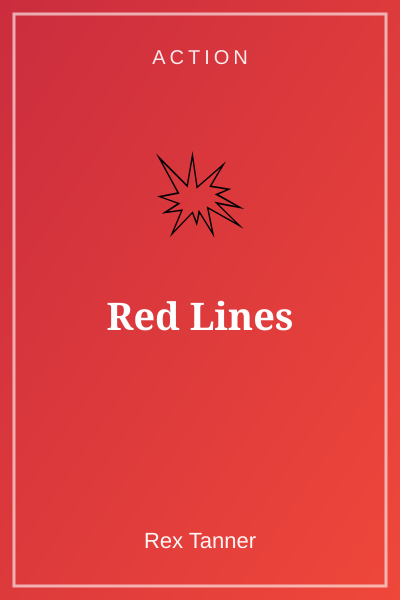
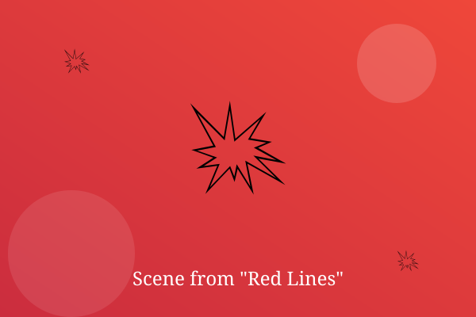

Chapter 1: The Safe House Burns

The safe house was burning before Dana got the witness out the back window. 'Run,' she said, and they ran.
Three black SUVs blocked the alley. Dana smashed a bin lid against the first man and grabbed a motorbike key.
'Hold on,' she told the witness. 'And whatever you do, do not look back.'
— End of Chapter —